Department of Information Systems
RWPSF 3305 — Web Application Development with Spring Framework
Kassymzhanov Arzum
IT1-2404IS
Вариант 12 — Method validation
Almaty, 2026
Цель работы — реализовать обработку формы книги средствами Spring MVC и Thymeleaf: связывание полей, декларативную валидацию, сохранение введённых значений при ошибках, локализацию и централизованную обработку исключений. Индивидуальное задание — вариант 12: method validation параметра поискового запроса.
Студент: Kassymzhanov Arzum. Группа: IT1-2404IS. Курс: RWPSF 3305 — Web Application Development with Spring Framework. Лабораторная работа №6: Forms and validation.
Репозиторий и ветка: https://github.com/Karz317/spring-lab-01/tree/lab06
Исходная ветка lab04, коммит bfaaf1278571960107ff2940e7cb27d4bb328b31. В доступном репозитории отсутствовала основа лабораторной №5, поэтому добавлены Book, BookRepository, BookService, REST CRUD, страницы каталога, фильтр, CSS и стартовая страница. Существующий код лабораторных №2–4 сохранён. Коммит реализации №6: ec47757.
| Компонент | Фактически использовано |
|---|---|
| Java | JDK 25.0.4.1 LTS; SHA-256 архива проверен |
| Spring Boot | 4.1.1 |
| Maven | 3.9.16, repository wrapper |
| Представления | Thymeleaf; английский и русский resource bundles |
| Валидация | Jakarta Bean Validation, Hibernate Validator |
| Хранилище | ConcurrentHashMap; три начальные книги; данные в памяти |
| Проверки | 32 автоматических теста; 23 записи браузерных/HTTP-проверок |
BookForm отделён от неизменяемого record Book. Getters и setters позволяют WebDataBinder заполнить объект частично и вернуть его в форму вместе с BindingResult. Пользователь не может связать форму с id: @InitBinder разрешает только title, author, year, genre и available. В отличие от примера методички, год представлен Integer с @NotNull: пустое поле получает понятное сообщение «Укажите год», а не превращается в 0.
| Поле | Ограничение | Поведение |
|---|---|---|
| title | @NotBlank, @Size(max=120) | Пустая строка, пробелы и 121 символ отклоняются |
| author | @NotBlank, @NoDigits | Имя обязательно; цифры, включая Unicode, запрещены |
| year | @NotNull, @Min(1450), @Max(2100) | Границы 1450 и 2100 допустимы; пустое и нечисловое значение отклоняются |
| genre | @NotNull | Выбор жанра обязателен; неизвестное значение даёт ошибку связывания |
| available | boolean | Значение checkbox сохраняется в Book |
src/main/java/kz/iitu/springlab/web/BookForm.java
package kz.iitu.springlab.web;
import jakarta.validation.constraints.Max;
import jakarta.validation.constraints.Min;
import jakarta.validation.constraints.NotBlank;
import jakarta.validation.constraints.NotNull;
import jakarta.validation.constraints.Size;
import kz.iitu.springlab.web.validation.NoDigits;
public class BookForm {
@NotBlank(message = "{book.title.required}")
@Size(max = 120, message = "{book.title.size}")
private String title;
@NotBlank(message = "{book.author.required}")
@NoDigits
private String author;
@NotNull(message = "{book.year.required}")
@Min(value = 1450, message = "{book.year.range}")
@Max(value = 2100, message = "{book.year.range}")
private Integer year;
@NotNull(message = "{book.genre.required}")
private Genre genre;
private boolean available;
public String getTitle() { return title; }
public void setTitle(String title) { this.title = title; }
public String getAuthor() { return author; }
public void setAuthor(String author) { this.author = author; }
public Integer getYear() { return year; }
public void setYear(Integer year) { this.year = year; }
public Genre getGenre() { return genre; }
public void setGenre(Genre genre) { this.genre = genre; }
public boolean isAvailable() { return available; }
public void setAvailable(boolean available) { this.available = available; }
}src/main/java/kz/iitu/springlab/web/Genre.java
package kz.iitu.springlab.web;
public enum Genre {
FICTION, NON_FICTION, SCIENCE, TECHNOLOGY, HISTORY
}src/main/java/kz/iitu/springlab/catalog/Book.java
package kz.iitu.springlab.catalog;
import kz.iitu.springlab.web.Genre;
public record Book(Long id, String title, String author, int year,
Genre genre, boolean available) {
public Book(Long id, String title, String author, int year) {
this(id, title, author, year, Genre.TECHNOLOGY, true);
}
}GET /books/new помещает в модель новый BookForm и Genre.values(). В POST параметр BindingResult расположен непосредственно после @Valid @ModelAttribute("form"). Если имеются ошибки, genres снова добавляется в модель и возвращается books/form. При успехе создаётся книга, локализованное сообщение передаётся через flash и выполняется redirect:/books.
th:object задаёт объект формы; *{title} обращается к его свойству. th:field генерирует name, id и value, а для select и checkbox — выбранное состояние. th:errors показывает сообщения; th:errorclass выделяет поле. Блок #fields размещён внутри области th:object, чтобы summary имел доступ к BindingResult. novalidate позволяет продемонстрировать именно серверную проверку.
src/main/java/kz/iitu/springlab/web/BookPageController.java
package kz.iitu.springlab.web;
import jakarta.validation.Valid;
import java.util.Locale;
import kz.iitu.springlab.catalog.Book;
import kz.iitu.springlab.catalog.BookService;
import org.springframework.context.MessageSource;
import org.springframework.stereotype.Controller;
import org.springframework.ui.Model;
import org.springframework.validation.BindingResult;
import org.springframework.web.bind.WebDataBinder;
import org.springframework.web.bind.annotation.*;
import org.springframework.web.servlet.mvc.support.RedirectAttributes;
@Controller
@RequestMapping("/books")
public class BookPageController {
private final BookService service;
private final MessageSource messages;
public BookPageController(BookService service, MessageSource messages) {
this.service = service;
this.messages = messages;
}
@InitBinder("form")
public void configureBinding(WebDataBinder binder) {
binder.setAllowedFields("title", "author", "year", "genre", "available");
}
@GetMapping
public String list(@RequestParam(required = false) String author, Model model) {
model.addAttribute("books", service.findAll(author));
model.addAttribute("author", author);
return "books/list";
}
@GetMapping("/new")
public String newForm(Model model) {
model.addAttribute("form", new BookForm());
model.addAttribute("genres", Genre.values());
return "books/form";
}
@GetMapping("/{id}")
public String detail(@PathVariable long id, Model model) {
model.addAttribute("book", service.findById(id));
return "books/detail";
}
@PostMapping
public String create(@Valid @ModelAttribute("form") BookForm form,
BindingResult binding, Model model,
RedirectAttributes redirect, Locale locale) {
if (binding.hasErrors()) {
model.addAttribute("genres", Genre.values());
return "books/form";
}
Book saved = service.create(new Book(null, form.getTitle(), form.getAuthor(),
form.getYear(), form.getGenre(), form.isAvailable()));
redirect.addFlashAttribute("message", messages.getMessage("book.added",
new Object[]{saved.title()}, locale));
return "redirect:/books";
}
}src/main/resources/templates/books/form.html
<!DOCTYPE html>
<html xmlns:th="http://www.thymeleaf.org" th:lang="${#locale.language}">
<head>
<meta charset="UTF-8">
<meta name="viewport" content="width=device-width, initial-scale=1">
<title th:text="#{book.new}">New book</title>
<link rel="stylesheet" th:href="@{/css/app.css}">
</head>
<body>
<main class="container narrow">
<header>
<a class="brand" th:href="@{/books}" th:text="#{book.catalogue}">Book catalogue</a>
<nav th:aria-label="#{form.language}">
<a th:href="@{/books/new(lang='en')}">English</a>
<a th:href="@{/books/new(lang='ru')}">Русский</a>
</nav>
</header>
<h1 th:text="#{book.new}">New book</h1>
<p class="intro" th:text="#{form.intro}">Add a book to the catalogue.</p>
<form class="panel book-form" th:action="@{/books}" th:object="${form}" method="post" novalidate>
<div class="alert" role="alert" th:if="${#fields.hasAnyErrors()}">
<strong th:text="#{form.errors}">Please correct the following errors:</strong>
<ul><li th:each="error : ${#fields.allErrors()}" th:text="${error}"></li></ul>
</div>
<div class="field">
<label for="title" th:text="#{book.title}">Title</label>
<input type="text" th:field="*{title}" th:errorclass="is-invalid" aria-describedby="title-error">
<span id="title-error" class="error" th:if="${#fields.hasErrors('title')}" th:errors="*{title}"></span>
</div>
<div class="field">
<label for="author" th:text="#{book.author}">Author</label>
<input type="text" th:field="*{author}" th:errorclass="is-invalid" aria-describedby="author-error">
<span id="author-error" class="error" th:if="${#fields.hasErrors('author')}" th:errors="*{author}"></span>
</div>
<div class="columns">
<div class="field">
<label for="year" th:text="#{book.year}">Year</label>
<input type="number" th:field="*{year}" th:errorclass="is-invalid" aria-describedby="year-error">
<span id="year-error" class="error" th:if="${#fields.hasErrors('year')}" th:errors="*{year}"></span>
</div>
<div class="field">
<label for="genre" th:text="#{book.genre}">Genre</label>
<select th:field="*{genre}" th:errorclass="is-invalid" aria-describedby="genre-error">
<option value="" th:text="#{book.genre.choose}">Choose a genre</option>
<option th:each="g : ${genres}" th:value="${g}" th:text="#{'genre.' + ${g}}"></option>
</select>
<span id="genre-error" class="error" th:if="${#fields.hasErrors('genre')}" th:errors="*{genre}"></span>
</div>
</div>
<label class="checkbox-row">
<input type="checkbox" th:field="*{available}">
<span th:text="#{book.available}">Available</span>
</label>
<div class="actions">
<button type="submit" th:text="#{form.submit}">Save</button>
<a th:href="@{/books}" th:text="#{form.back}">Back to catalogue</a>
</div>
</form>
</main>
</body>
</html>| Ввод / действие | Результат |
|---|---|
| Пустое название; остальные поля заполнены | 200 HTML; ошибка title; автор, год, жанр и checkbox сохранены; новая книга не создана |
| Год 1200 | 200 HTML; book.year.range рядом с полем и в summary; введённый 1200 остаётся |
| Жанр не выбран | 200 HTML; book.genre.required; остальные значения остаются |
| Автор Bloch 2018 | 200 HTML; срабатывает собственный @NoDigits |
| Пустое название + 1200 + без жанра | Все три ошибки одновременно перечислены в summary |
| Корректная форма | POST /books → 302 Location: /books → GET /books → 200; новая книга и flash |
| Обновление страницы | Повторный GET 200; flash исчез; число книг осталось 4 |
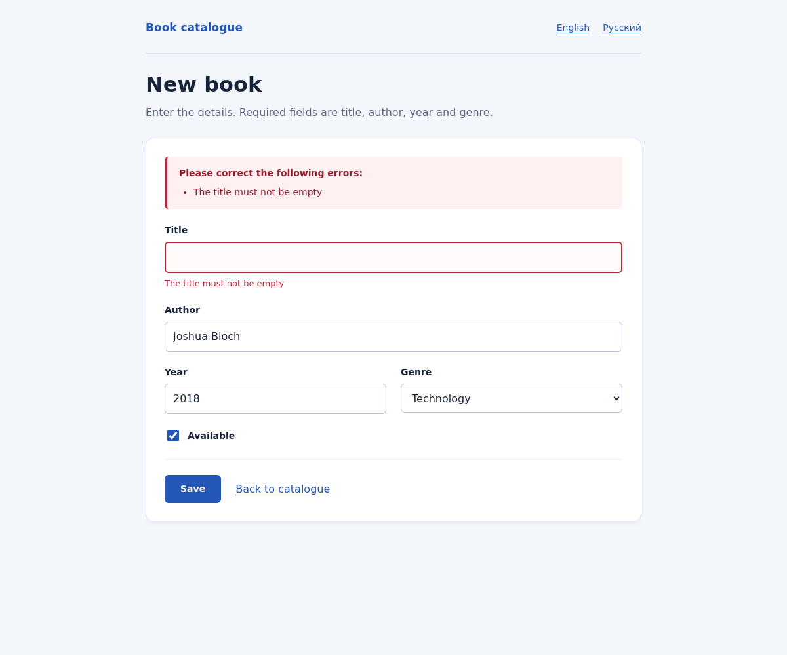
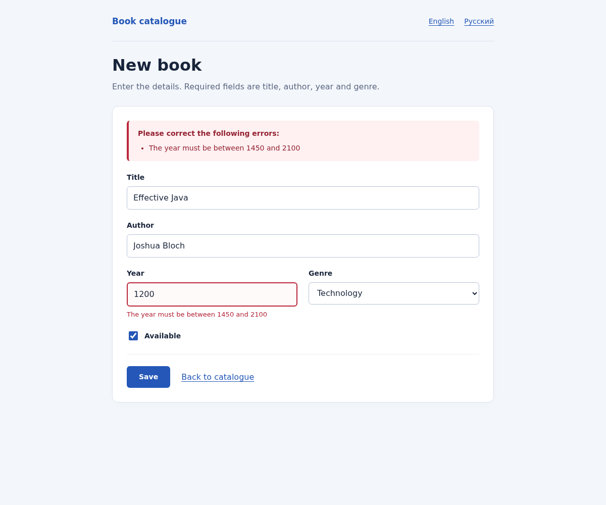
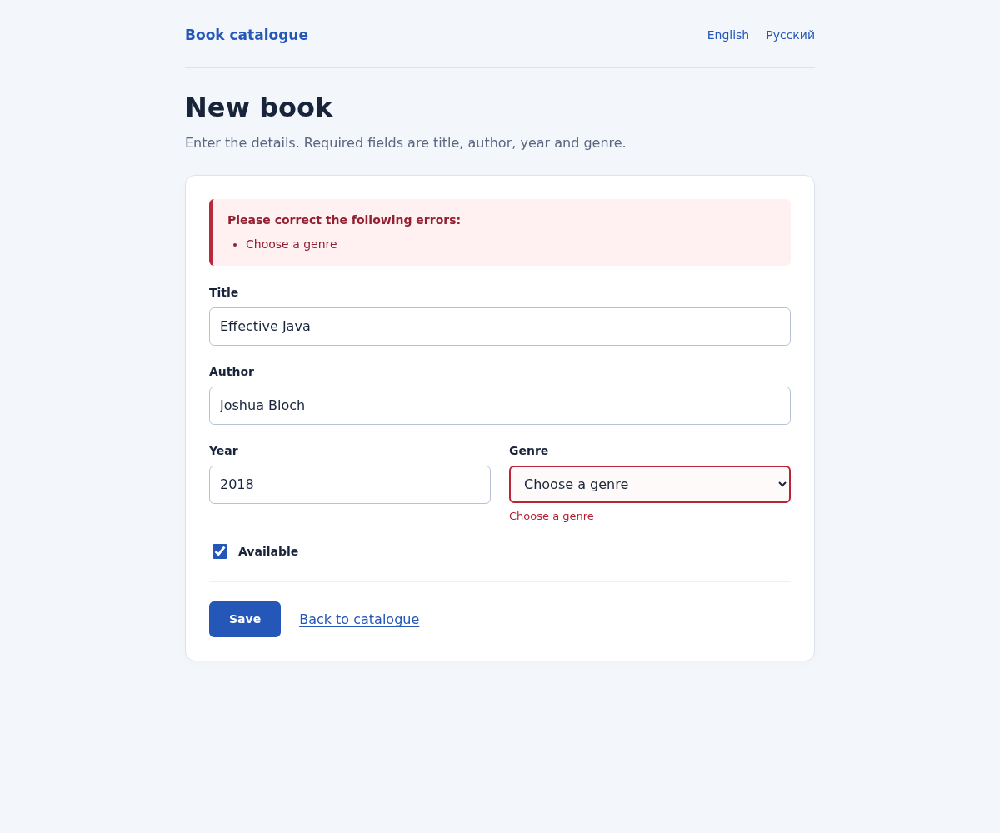
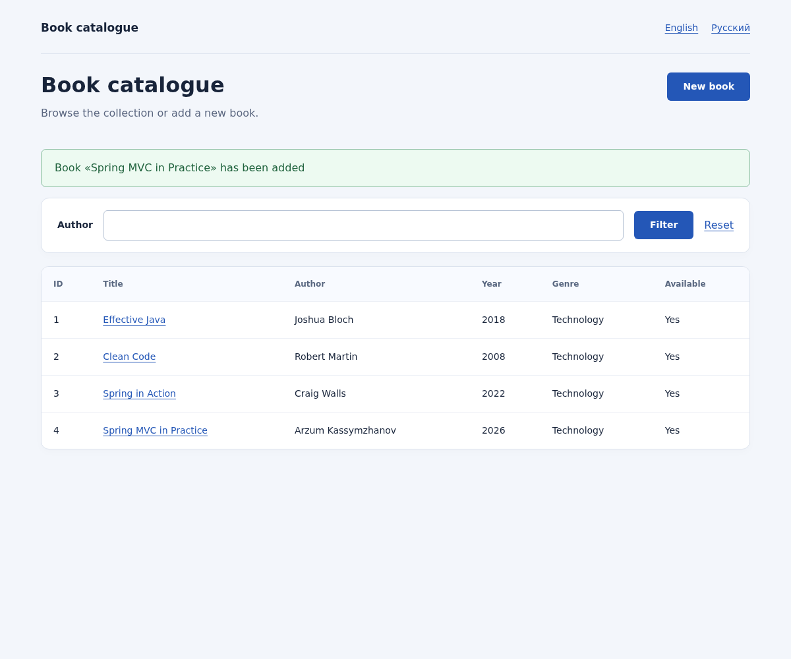
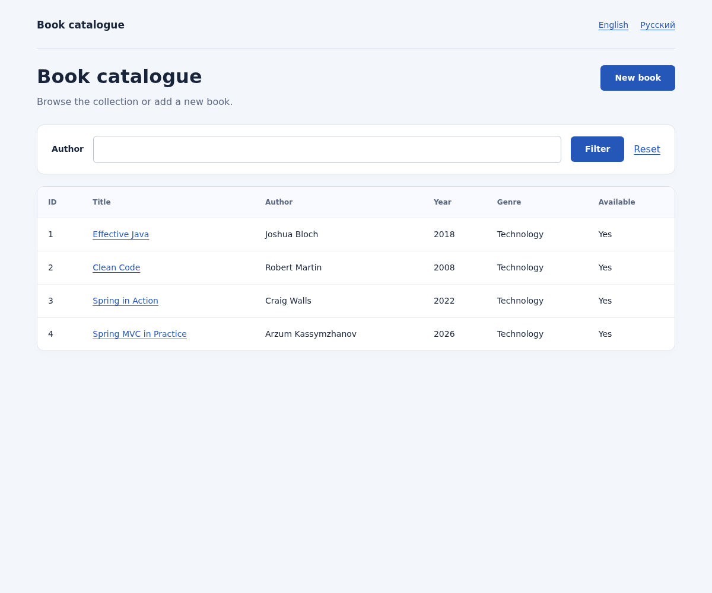
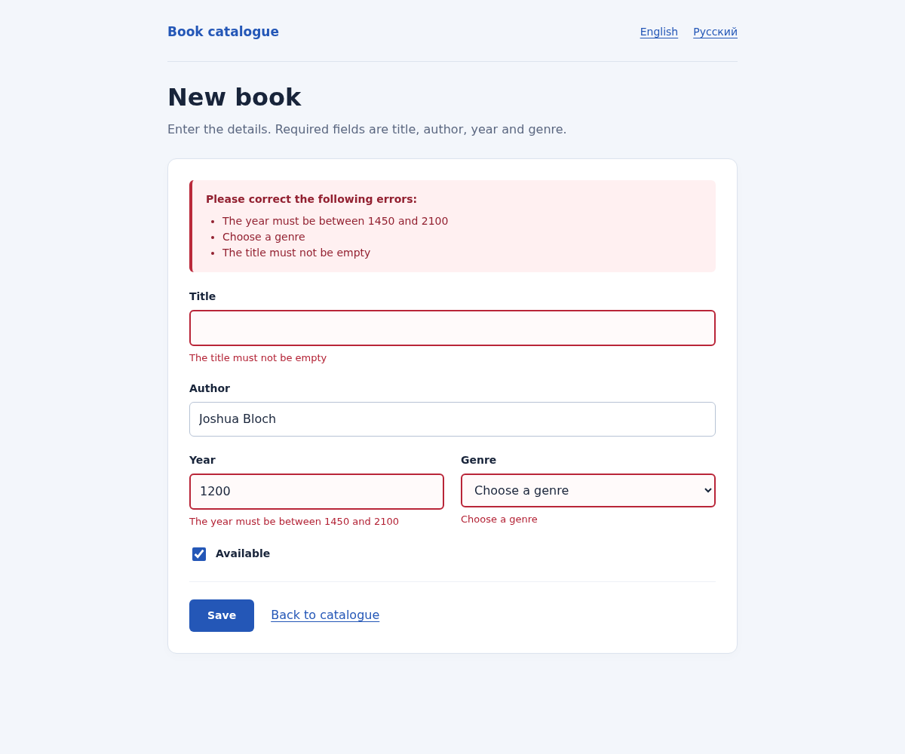
FlashMap хранит сообщение между POST и последующим GET, обычно с использованием HTTP-сессии. После совпавшего GET оно потребляется. F5 повторяет GET, а не POST: повторного service.create нет.
SessionLocaleResolver использует английский язык по умолчанию и хранит выбор в сессии. LocaleChangeInterceptor читает lang. Подписи, названия жанров, ошибки Bean Validation, ошибки преобразования типов, flash и страница 404 берутся из resource bundles. Обязательный messages.properties позволяет Spring Boot настроить MessageSource; messages_ru.properties содержит русский вариант. Скриншоты ниже показывают одинаковую ошибку title на обоих языках.
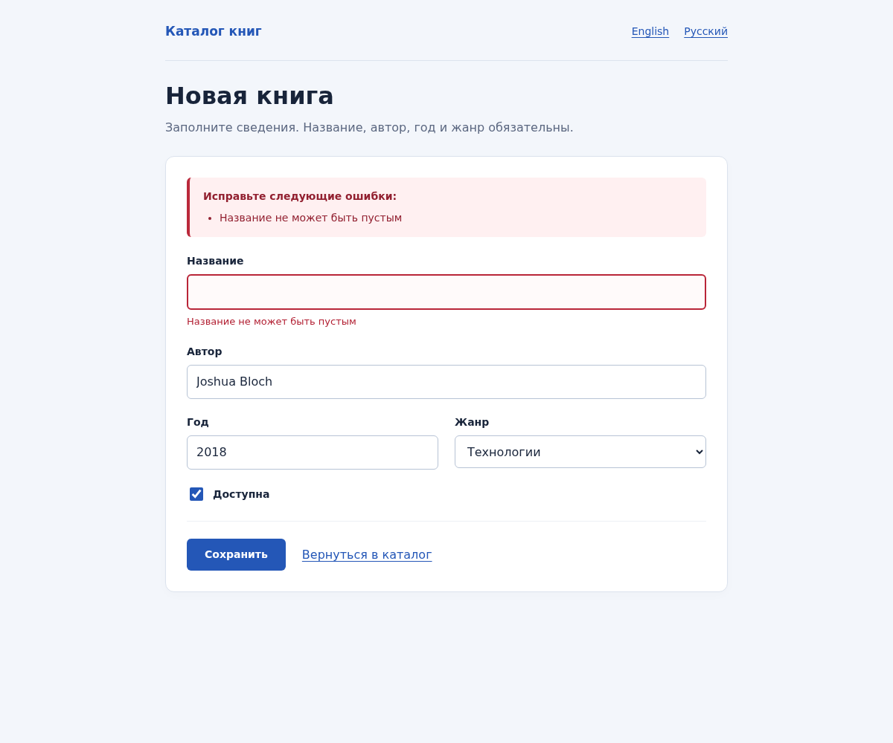
src/main/java/kz/iitu/springlab/config/LocaleConfiguration.java
package kz.iitu.springlab.config;
import java.util.Locale;
import org.springframework.context.annotation.Bean;
import org.springframework.context.annotation.Configuration;
import org.springframework.web.servlet.LocaleResolver;
import org.springframework.web.servlet.config.annotation.InterceptorRegistry;
import org.springframework.web.servlet.config.annotation.WebMvcConfigurer;
import org.springframework.web.servlet.i18n.LocaleChangeInterceptor;
import org.springframework.web.servlet.i18n.SessionLocaleResolver;
@Configuration
public class LocaleConfiguration implements WebMvcConfigurer {
@Bean
public LocaleResolver localeResolver() {
SessionLocaleResolver resolver = new SessionLocaleResolver();
resolver.setDefaultLocale(Locale.ENGLISH);
return resolver;
}
@Bean
public LocaleChangeInterceptor localeChangeInterceptor() {
LocaleChangeInterceptor interceptor = new LocaleChangeInterceptor();
interceptor.setParamName("lang");
interceptor.setIgnoreInvalidLocale(true);
return interceptor;
}
@Override
public void addInterceptors(InterceptorRegistry registry) {
registry.addInterceptor(localeChangeInterceptor());
}
}src/main/resources/messages.properties
book.catalogue=Book catalogue
book.new=New book
book.id=ID
book.title=Title
book.author=Author
book.year=Year
book.genre=Genre
book.genre.choose=Choose a genre
book.available=Available
book.added=Book «{0}» has been added
book.title.required=The title must not be empty
book.title.size=The title must not exceed 120 characters
book.author.required=The author must not be empty
book.author.nodigits=The author must not contain digits
book.year.required=The year is required
book.year.range=The year must be between 1450 and 2100
book.genre.required=Choose a genre
book.notfound=Book with id {0} was not found
book.search.size=The search query must contain between 2 and 60 characters
form.submit=Save
form.back=Back to catalogue
form.language=Language
form.intro=Enter the details. Required fields are title, author, year and genre.
form.errors=Please correct the following errors:
catalogue.intro=Browse the collection or add a new book.
catalogue.filter=Filter
catalogue.reset=Reset
catalogue.empty=No books found
genre.FICTION=Fiction
genre.NON_FICTION=Non-fiction
genre.SCIENCE=Science
genre.TECHNOLOGY=Technology
genre.HISTORY=History
genre.UNKNOWN=Not specified
common.yes=Yes
common.no=No
error.notfound=Book not found
error.validation=Validation failed
typeMismatch.form.year=Enter a whole number for the year
typeMismatch.form.genre=Choose a genre from the listsrc/main/resources/messages_ru.properties
book.catalogue=Каталог книг
book.new=Новая книга
book.id=№
book.title=Название
book.author=Автор
book.year=Год
book.genre=Жанр
book.genre.choose=Выберите жанр
book.available=Доступна
book.added=Книга «{0}» добавлена
book.title.required=Название не может быть пустым
book.title.size=Название не длиннее 120 символов
book.author.required=Автор не может быть пустым
book.author.nodigits=Имя автора не должно содержать цифры
book.year.required=Укажите год
book.year.range=Год должен быть в диапазоне 1450–2100
book.genre.required=Выберите жанр
book.notfound=Книга с номером {0} не найдена
book.search.size=Поисковый запрос должен содержать от 2 до 60 символов
form.submit=Сохранить
form.back=Вернуться в каталог
form.language=Язык
form.intro=Заполните сведения. Название, автор, год и жанр обязательны.
form.errors=Исправьте следующие ошибки:
catalogue.intro=Просматривайте коллекцию и добавляйте новые книги.
catalogue.filter=Фильтр
catalogue.reset=Сбросить
catalogue.empty=Книги не найдены
genre.FICTION=Художественная литература
genre.NON_FICTION=Документальная литература
genre.SCIENCE=Наука
genre.TECHNOLOGY=Технологии
genre.HISTORY=История
genre.UNKNOWN=Не указан
common.yes=Да
common.no=Нет
error.notfound=Книга не найдена
error.validation=Ошибка валидации
typeMismatch.form.year=Введите целое число в поле года
typeMismatch.form.genre=Выберите жанр из списка@NoDigits имеет обязательные члены message, groups и payload, runtime retention и связь с NoDigitsValidator. null проходит: отсутствие автора проверяет @NotBlank. codePoints(), в отличие от chars(), также проверяет цифры в дополнительных Unicode-плоскостях. Тесты проверяют обычные цифры, арабскую ٢ и математическую 𝟙.
src/main/java/kz/iitu/springlab/web/validation/NoDigits.java
package kz.iitu.springlab.web.validation;
import jakarta.validation.Constraint;
import jakarta.validation.Payload;
import java.lang.annotation.ElementType;
import java.lang.annotation.Retention;
import java.lang.annotation.RetentionPolicy;
import java.lang.annotation.Target;
@Target(ElementType.FIELD)
@Retention(RetentionPolicy.RUNTIME)
@Constraint(validatedBy = NoDigitsValidator.class)
public @interface NoDigits {
String message() default "{book.author.nodigits}";
Class<?>[] groups() default {};
Class<? extends Payload>[] payload() default {};
}src/main/java/kz/iitu/springlab/web/validation/NoDigitsValidator.java
package kz.iitu.springlab.web.validation;
import jakarta.validation.ConstraintValidator;
import jakarta.validation.ConstraintValidatorContext;
public class NoDigitsValidator implements ConstraintValidator<NoDigits, String> {
@Override
public boolean isValid(String value, ConstraintValidatorContext context) {
return value == null || value.codePoints().noneMatch(Character::isDigit);
}
}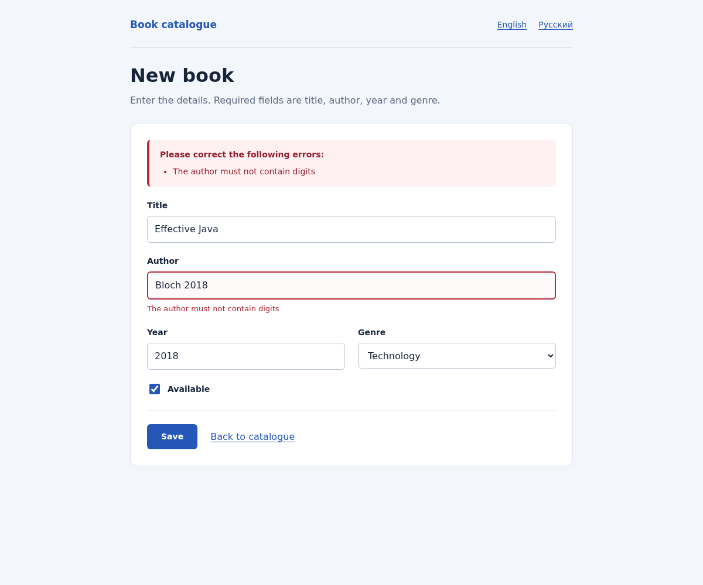
BookService выбрасывает BookNotFoundException для отсутствующего идентификатора. Advice ограничены assignableTypes конкретных контроллеров: это исключает пересечение MVC и REST, поскольку @RestController также является @Controller. Для страницы явно установлен @ResponseStatus(NOT_FOUND): возвращение одного имени шаблона без него дало бы 200. API возвращает RFC 9457 ProblemDetail.
| Запрос | Фактический статус / Content-Type | Обработчик |
|---|---|---|
| GET /books/999?lang=en | 404 · text/html;charset=UTF-8 | PageExceptionHandler → error/not-found |
| GET /api/books/999?lang=en | 404 · application/problem+json | ApiExceptionHandler → ProblemDetail |
{
"detail": "Book with id 999 was not found",
"instance": "/api/books/999",
"status": 404,
"title": "Book not found"
}src/main/java/kz/iitu/springlab/catalog/BookNotFoundException.java
package kz.iitu.springlab.catalog;
public class BookNotFoundException extends RuntimeException {
private final long id;
public BookNotFoundException(long id) {
super("Book with id " + id + " was not found");
this.id = id;
}
public long getId() {
return id;
}
}src/main/java/kz/iitu/springlab/web/PageExceptionHandler.java
package kz.iitu.springlab.web;
import java.util.Locale;
import kz.iitu.springlab.catalog.BookNotFoundException;
import org.springframework.context.MessageSource;
import org.springframework.http.HttpStatus;
import org.springframework.ui.Model;
import org.springframework.web.bind.annotation.*;
@ControllerAdvice(assignableTypes = BookPageController.class)
public class PageExceptionHandler {
private final MessageSource messages;
public PageExceptionHandler(MessageSource messages) {
this.messages = messages;
}
@ExceptionHandler(BookNotFoundException.class)
@ResponseStatus(HttpStatus.NOT_FOUND)
public String handleNotFound(BookNotFoundException exception, Model model, Locale locale) {
model.addAttribute("message", messages.getMessage("book.notfound",
new Object[]{exception.getId()}, locale));
return "error/not-found";
}
}src/main/java/kz/iitu/springlab/web/ApiExceptionHandler.java
package kz.iitu.springlab.web;
import java.util.Locale;
import java.util.Map;
import kz.iitu.springlab.catalog.BookNotFoundException;
import org.slf4j.Logger;
import org.slf4j.LoggerFactory;
import org.springframework.context.MessageSource;
import org.springframework.http.HttpStatus;
import org.springframework.http.ProblemDetail;
import org.springframework.web.bind.annotation.*;
import org.springframework.web.method.annotation.HandlerMethodValidationException;
@RestControllerAdvice(assignableTypes = BookRestController.class)
public class ApiExceptionHandler {
private static final Logger log = LoggerFactory.getLogger(ApiExceptionHandler.class);
private final MessageSource messages;
public ApiExceptionHandler(MessageSource messages) {
this.messages = messages;
}
@ExceptionHandler(BookNotFoundException.class)
@ResponseStatus(HttpStatus.NOT_FOUND)
public ProblemDetail handleNotFound(BookNotFoundException exception, Locale locale) {
ProblemDetail problem = ProblemDetail.forStatusAndDetail(HttpStatus.NOT_FOUND,
messages.getMessage("book.notfound", new Object[]{exception.getId()}, locale));
problem.setTitle(messages.getMessage("error.notfound", null, locale));
return problem;
}
@ExceptionHandler(HandlerMethodValidationException.class)
@ResponseStatus(HttpStatus.BAD_REQUEST)
public ProblemDetail handleMethodValidation(HandlerMethodValidationException exception,
Locale locale) {
log.info("Handled {} in book search", exception.getClass().getSimpleName());
ProblemDetail problem = ProblemDetail.forStatusAndDetail(HttpStatus.BAD_REQUEST,
messages.getMessage("book.search.size", null, locale));
problem.setTitle(messages.getMessage("error.validation", null, locale));
problem.setProperty("exception", exception.getClass().getSimpleName());
problem.setProperty("errors", exception.getParameterValidationResults().stream()
.flatMap(result -> result.getResolvableErrors().stream().map(error -> Map.of(
"parameter", result.getMethodParameter().getParameterName(),
"message", messages.getMessage(error, locale))))
.toList());
return problem;
}
}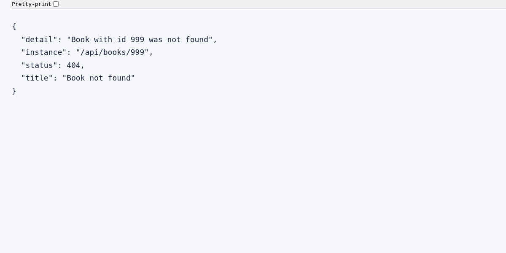
Задание: разместить @Size непосредственно на @RequestParam поискового endpoint, показать возникшее исключение и обработать его. Реализован GET /api/books/search?q=…. Длина q должна составлять от 2 до 60 символов включительно; поиск нечувствителен к регистру. Отсутствующий q по умолчанию пуст и отклоняется. Если корректная строка не совпала с названием, возвращается 200 и [].
Встроенная method validation Spring MVC проверяет параметр до вызова search и при нарушении выбрасывает HandlerMethodValidationException. @Validated на классе отсутствует: иначе включился бы иной путь через AOP. Обработчик возвращает 400 application/problem+json, локализованный текст, фактическое имя исключения и errors с параметром q; имя исключения также записывается в журнал.
src/main/java/kz/iitu/springlab/web/BookRestController.java
package kz.iitu.springlab.web;
import jakarta.validation.constraints.Size;
import java.net.URI;
import java.util.List;
import kz.iitu.springlab.catalog.Book;
import kz.iitu.springlab.catalog.BookService;
import org.springframework.http.ResponseEntity;
import org.springframework.web.bind.annotation.*;
import org.springframework.web.server.ResponseStatusException;
import org.springframework.http.HttpStatus;
@RestController
@RequestMapping("/api/books")
public class BookRestController {
private final BookService service;
public BookRestController(BookService service) {
this.service = service;
}
@GetMapping
public List<Book> list(@RequestParam(required = false) String author,
@RequestParam(defaultValue = "10") int limit) {
if (limit < 0) {
throw new ResponseStatusException(HttpStatus.BAD_REQUEST, "limit must not be negative");
}
return service.findAll(author).stream().limit(limit).toList();
}
// Spring MVC performs method validation; class-level @Validated is intentionally absent.
@GetMapping("/search")
public List<Book> search(@RequestParam(defaultValue = "")
@Size(min = 2, max = 60, message = "{book.search.size}") String q) {
return service.search(q);
}
@GetMapping("/{id}")
public ResponseEntity<Book> find(@PathVariable long id) {
return ResponseEntity.ok(service.findById(id));
}
@PostMapping
public ResponseEntity<Book> create(@RequestBody BookRequest book) {
Book saved = service.create(book.toBook());
return ResponseEntity.created(URI.create("/api/books/" + saved.id())).body(saved);
}
@PutMapping("/{id}")
public ResponseEntity<Book> replace(@PathVariable long id, @RequestBody BookRequest book) {
return ResponseEntity.ok(service.replace(id, book.toBook()));
}
@DeleteMapping("/{id}")
public ResponseEntity<Void> delete(@PathVariable long id) {
service.delete(id);
return ResponseEntity.noContent().build();
}
}| Запрос / длина | Результат |
|---|---|
| q=Java | 200, Effective Java |
| q=eFfEcTiVe | 200, поиск нечувствителен к регистру |
| q отсутствует / 0 | 400 HandlerMethodValidationException |
| q=a / 1 | 400 HandlerMethodValidationException |
| q=xx / 2 | 200 [] |
| 60 символов x | 200 [] |
| 61 символ x | 400 HandlerMethodValidationException |
| q=a&lang=ru | 400, русский текст в detail и errors |
{
"detail": "The search query must contain between 2 and 60 characters",
"instance": "/api/books/search",
"status": 400,
"title": "Validation failed",
"exception": "HandlerMethodValidationException",
"errors": [
{
"parameter": "q",
"message": "The search query must contain between 2 and 60 characters"
}
]
}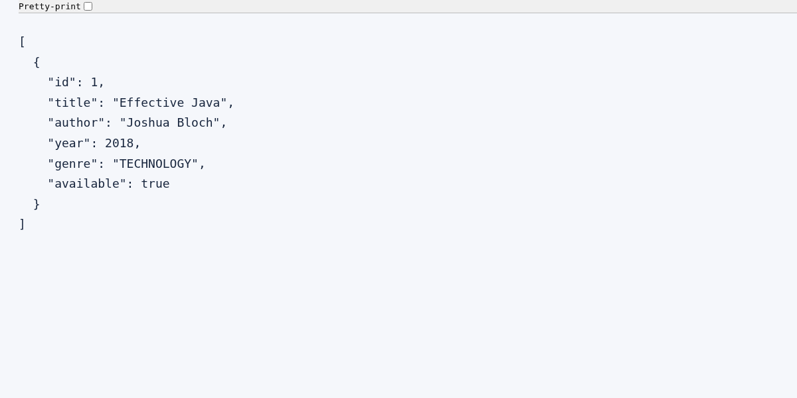
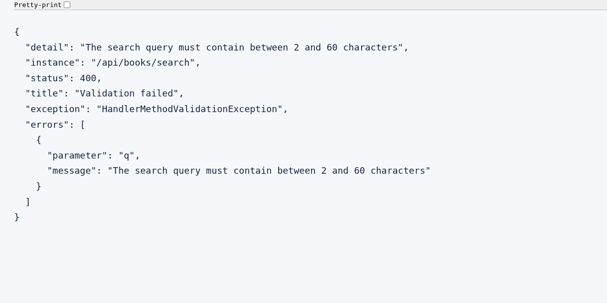
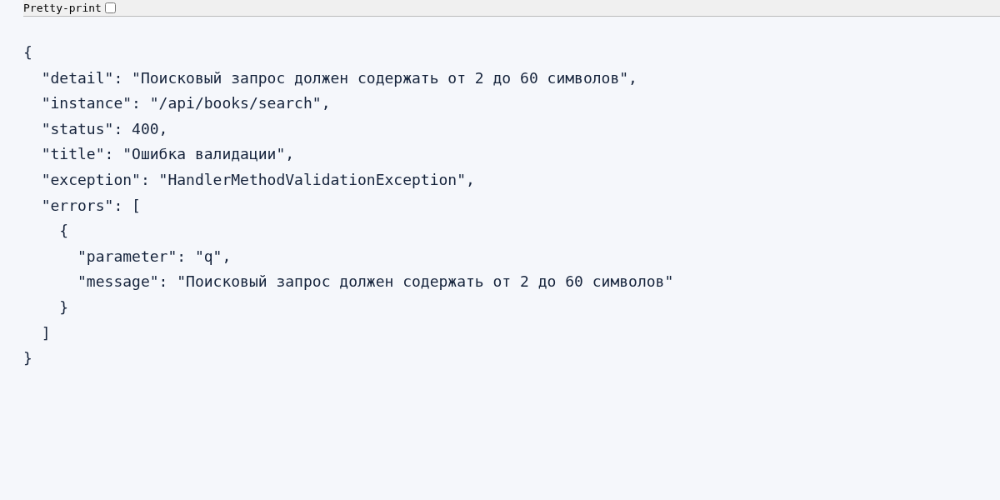
REST принимает отдельный BookRequest. Новые поля жанра и доступности являются необязательными для старого JSON запроса; это сохраняет команды из методички №5. Идентификатор присваивает репозиторий, PUT использует id из URL, а повторный DELETE возвращает 404.
| Операция | Проверенный результат |
|---|---|
| GET /api/books?author=Bloch&limit=1 | 200, JSON содержит Joshua Bloch |
| GET /api/books/{id} | 200 для существующего; 404 ProblemDetail для отсутствующего |
| POST /api/books | 201 + Location; созданный ресурс читается по Location |
| PUT /api/books/{id} | 200 и заменённая запись; 404 для отсутствующего |
| DELETE /api/books/{id} | 204, пустое тело; повторный DELETE 404 |
| Эксперимент | Статус | Причина |
|---|---|---|
| GET /api/books/abc | 400 | abc не преобразуется в long @PathVariable |
| GET /api/nothing | 404 | Нет такого маршрута или статического ресурса |
| DELETE /api/books | 405 | Метод DELETE не объявлен для пути без id |
| POST /api/books, Content-Type: text/plain | 415 | Нет подходящего converter для BookRequest из text/plain |
| GET /api/books, Accept: application/xml | 406 | Не удаётся представить ответ поддерживаемым converter в требуемом формате |
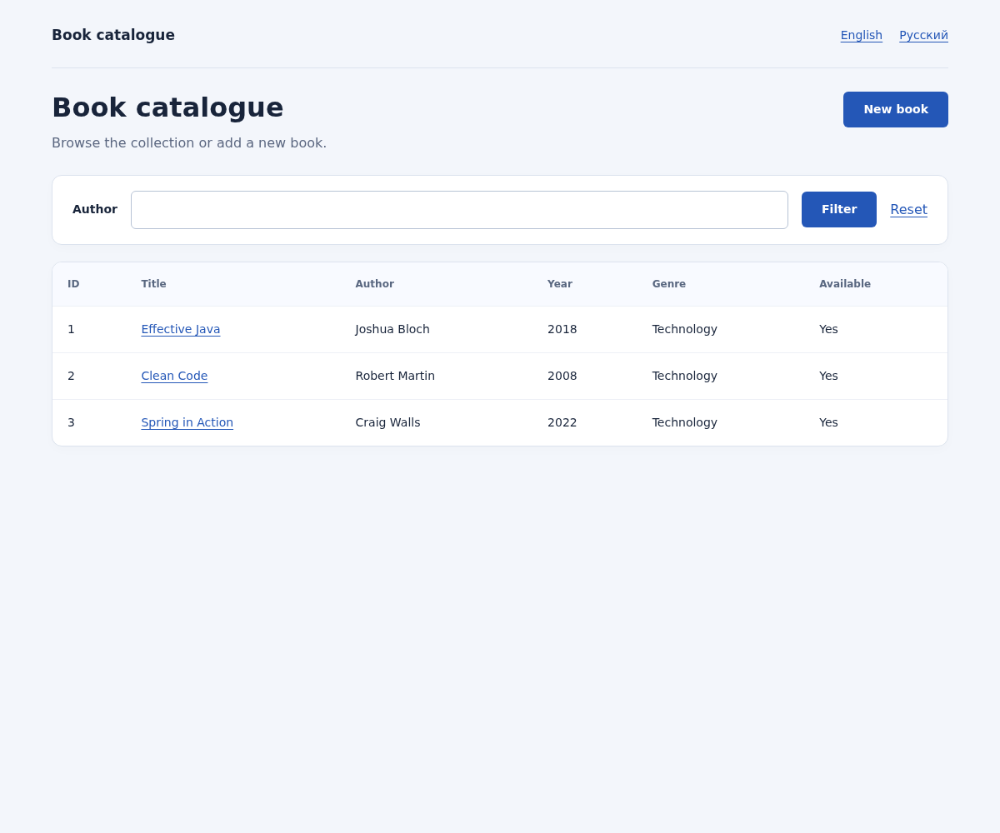
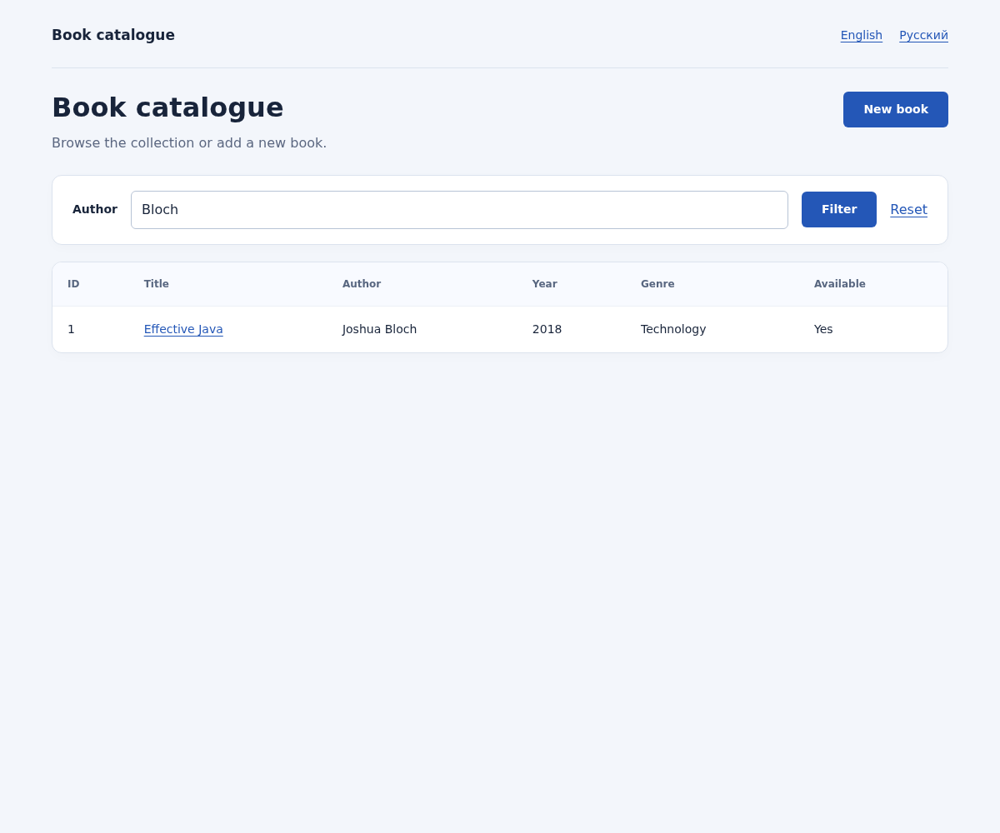
Выполнено bash mvnw -s /workspace/.tools/maven-settings.xml -B verify с Java 25. Команда завершилась BUILD SUCCESS; создан запускаемый JAR. После исправлений повторно выполнен полный набор, затем отдельно проверено повторяемое облачное setup-описание. Сервер запускался из собранного JAR; браузерные проверки выполнены настоящим headless Chromium через Playwright.
| Набор | Выполнено | Failures / Errors / Skipped |
|---|---|---|
| BookWorkflowTests | 25 | 0 / 0 / 0 |
| NoDigitsValidatorTests | 6 | 0 / 0 / 0 |
| SpringLab01ApplicationTests | 1 | 0 / 0 / 0 |
| Итого | 32 | 0 / 0 / 0 |
Тесты проверяют не только загрузку контекста: отсутствие записи при ошибках, границы года и поисковой строки, недопустимый enum, нечисловой ввод, русский locale в сессии, однократность flash, сохранение genre/available, запрет подмены id, escaping введённого HTML, REST CRUD и HTTP-ошибки. Браузерные наблюдения сохранены в docs/browser-checks.json; PNG — в docs/screenshots. Проверки демонстрируют техническое выполнение работы; очная демонстрация преподавателю выполняется студентом.
bash mvnw clean verify
java -jar target/spring-lab-01-0.0.1-SNAPSHOT.jar
# Для подготовленной облачной среды:
source /workspace/.tools/java-env.sh
bash mvnw -s /workspace/.tools/maven-settings.xml -B verify
# Скриншоты (Chromium и Playwright):
python scripts/capture-evidence.pyДля демонстрации используется default profile и порт 8080. Существующий dev profile использует 8081. База данных и секреты не требуются; после перезапуска данные в памяти сбрасываются. Реальная отправка почты для этого задания не требуется. Облачный Maven использует поддерживаемый proxy и существующий system trust store без отключения TLS.
Windows: рабочая папка студента C:\Labworks\Spring\spring-lab-01-main. После получения файлов lab06 и установки JDK 25 выполнить следующие команды PowerShell. Существующую папку и локальные изменения следует сохранить до замены; полный Git-проект можно клонировать в соседнюю новую папку, как описано в README.
Set-Location 'C:\Labworks\Spring\spring-lab-01-main'
.\mvnw.cmd clean verify
java -jar .\target\spring-lab-01-0.0.1-SNAPSHOT.jarПравила пользовательского ввода и изменяемое состояние формы отделены от доменной записи; id не участвует в связывании и mass assignment.
th:object выбирает объект модели form; *{title} читает или связывает его свойство title.
name, id, value, selected/checked и служебный hidden marker для checkbox; при ошибке использует rejected value из BindingResult.
Он нужен для оценки th:field и для исходных значений до первого POST.
Связывание и преобразование типов останутся, но Bean Validation ограничений формы не выполнится.
Spring не свяжет его с валидируемым объектом непосредственно перед ним; ошибочная форма может привести к исключению вместо обычного возврата шаблона.
Список вариантов не приходит в POST и не хранится в BookForm; его нужно предоставить при каждом рендеринге формы.
В BindingResult как FieldError или ObjectError. Контроллер проверяет hasErrors; это отличается от исключения method validation варианта 12.
NotNull запрещает null; NotEmpty также пустую строку/коллекцию; NotBlank проверяет строку после учёта пробелов.
Ключ в message="{book.title.required}" разрешается валидатором через MessageSource и активный Locale; th:errors выводит полученный текст.
Первый относится к конкретному свойству, второй — ко всему объекту, например при class-level constraint. В реализованной форме ограничения дают field errors.
Это обязательный default bundle для автоконфигурации MessageSource и fallback для отсутствующих переводов.
lang читает LocaleChangeInterceptor; SessionLocaleResolver сохраняет выбор в HTTP-сессии; default — English.
message задаёт текст или ключ, groups — группы валидации, payload — дополнительные метаданные нарушения.
Ограничение отвечает только за цифры; обязательность значения отдельно проверяет NotBlank.
assignableTypes = BookPageController.class и BookRestController.class. Без ограничения общий обработчик мог бы вернуть неправильный формат ответа.
Внутри применимого контроллера/advice учитывается наиболее конкретный тип исключения; между advice также важен порядок @Order, а локальные обработчики контроллера проверяются раньше.
Он вставляет пользовательский HTML без escaping и может привести к XSS. Здесь используется th:text и безопасное связывание th:field.
HandlerMethodValidationException от встроенной Spring MVC validation; ApiExceptionHandler превращает его в 400 ProblemDetail с именем q и локализованным сообщением.
Декларативная валидация позволяет описать правила возле свойств формы и повторно использовать ограничения без ручных if в контроллере. BindingResult связывает нарушения с конкретными полями, сохраняя введённые пользователем данные. Resource bundles отделяют тексты от кода и позволяют менять язык интерфейса и ошибок одновременно. Controller advice и method validation дают согласованные ответы для HTML-клиента и REST API, а Post/Redirect/Get предотвращает повторное создание записи при обновлении страницы.
Методичка Laboratory_work_6_EN.docx — основное задание, вариант 12 и требования к отчёту.
Методичка Laboratory_work_5_EN.docx — восстановление основы REST и MVC каталога.
Spring Framework: https://docs.spring.io/spring-framework/reference/web/webmvc/mvc-controller/ann-validation.html
Spring Boot: https://docs.spring.io/spring-boot/reference/features/internationalization.html
Thymeleaf: https://www.thymeleaf.org/doc/tutorials/3.1/thymeleafspring.html
src/main/java/kz/iitu/springlab/catalog/BookRepository.java
package kz.iitu.springlab.catalog;
import java.util.Comparator;
import java.util.List;
import java.util.Optional;
import java.util.concurrent.ConcurrentHashMap;
import java.util.concurrent.atomic.AtomicLong;
import org.springframework.stereotype.Repository;
@Repository
public class BookRepository {
private final ConcurrentHashMap<Long, Book> storage = new ConcurrentHashMap<>();
private final AtomicLong sequence = new AtomicLong();
public BookRepository() {
create(new Book(null, "Effective Java", "Joshua Bloch", 2018));
create(new Book(null, "Clean Code", "Robert Martin", 2008));
create(new Book(null, "Spring in Action", "Craig Walls", 2022));
}
public List<Book> findAll() {
return storage.values().stream().sorted(Comparator.comparing(Book::id)).toList();
}
public Optional<Book> findById(long id) {
return Optional.ofNullable(storage.get(id));
}
public Book create(Book book) {
long id = sequence.incrementAndGet();
Book saved = withId(id, book);
storage.put(id, saved);
return saved;
}
public Optional<Book> replace(long id, Book book) {
return Optional.ofNullable(storage.computeIfPresent(id, (_, _) -> withId(id, book)));
}
public boolean deleteById(long id) {
return storage.remove(id) != null;
}
private Book withId(long id, Book book) {
return new Book(id, book.title(), book.author(), book.year(), book.genre(), book.available());
}
}src/main/java/kz/iitu/springlab/catalog/BookService.java
package kz.iitu.springlab.catalog;
import java.util.List;
import java.util.Locale;
import org.springframework.stereotype.Service;
@Service
public class BookService {
private final BookRepository repository;
public BookService(BookRepository repository) {
this.repository = repository;
}
public List<Book> findAll(String author) {
return repository.findAll().stream()
.filter(book -> author == null || book.author().toLowerCase(Locale.ROOT)
.contains(author.toLowerCase(Locale.ROOT)))
.toList();
}
public List<Book> search(String query) {
String fragment = query.toLowerCase(Locale.ROOT);
return repository.findAll().stream()
.filter(book -> book.title().toLowerCase(Locale.ROOT).contains(fragment)).toList();
}
public Book findById(long id) {
return repository.findById(id).orElseThrow(() -> new BookNotFoundException(id));
}
public Book create(Book book) {
return repository.create(book);
}
public Book replace(long id, Book book) {
return repository.replace(id, book).orElseThrow(() -> new BookNotFoundException(id));
}
public void delete(long id) {
if (!repository.deleteById(id)) {
throw new BookNotFoundException(id);
}
}
}src/main/java/kz/iitu/springlab/web/BookRequest.java
package kz.iitu.springlab.web;
import kz.iitu.springlab.catalog.Book;
/** Keeps the lab 5 JSON body compatible while accepting the new optional fields. */
public record BookRequest(String title, String author, int year, Genre genre, Boolean available) {
public Book toBook() {
return new Book(null, title, author, year,
genre == null ? Genre.TECHNOLOGY : genre,
available == null || available);
}
}